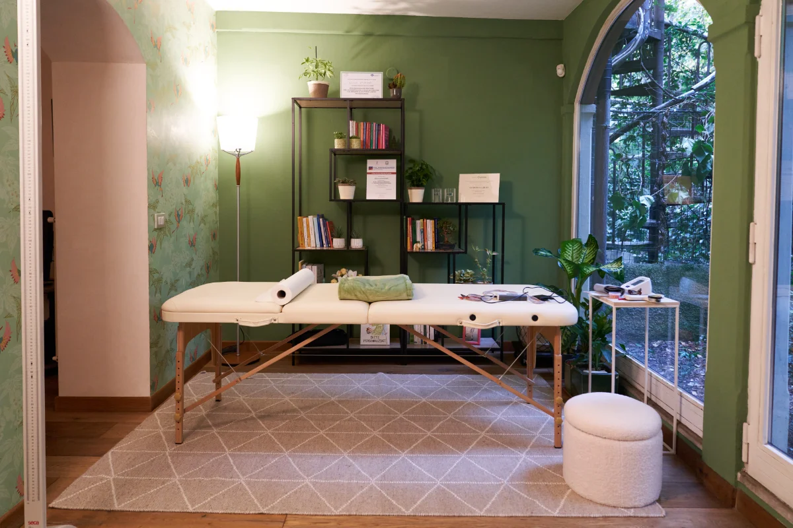

Lascia che ti aiuti a migliorare le tue abitudini alimentari e a sentirti in forma, tutti i giorni, senza rinunciare al gusto
Un percorso condiviso e consapevole
Il percorso inizia dalla tua storia, dalle tue abitudini, dalle tue esigenze e, quando necessario, dagli esami e dagli aspetti clinici che possono aiutarmi a comprendere meglio la tua situazione.
Il piano alimentare nasce dai tuoi bisogni, dal tuo stato di salute e dalle tue abitudini quotidiane, per offrirti indicazioni concrete, realistiche, e sostenibili nel tempo.
I controlli ci consentono di osservare i cambiamenti, valutare i progressi, capire cosa sta funzionando e apportare, quando necessario, gli aggiustamenti più adatti alle tue esigenze.
È promuovere la consapevolezza dei tuoi bisogni e l'ascolto del tuo corpo, fornendoti strumenti per compiere scelte alimentari autonome e in linea con le tue esigenze.
Una consulenza nutrizionale in studio a Milano o a Trezzano sul Naviglio
Prima visita in studioUna consulenza nutrizionale direttamenta a casa tua
Prima visita domiciliareUn’opzione comoda e flessibile per ricevere supporto a distanza.
Consulenza onlineUn momento dedicato alle verifiche.
Visita di controlloNel dubbio, scrivi ad atorinoluigia@gmail.com oppure chiama al 347-7289544: ti consiglio l’opzione giusta per te.

A Milano, Trezzano sul Naviglio, Domicilio oppure Consulenza online
Dai pazienti
“Dottoressa molto competente che si avvale di tecniche multiple e molto aggiornate. Approccio “globale” sull'analisi del corpo e del Metabolismo e non solo su alimentazione.”
Silvia — prima visita
“Ho apprezzato il percorso nutrizionale personalizzato, le spiegazioni chiare e dettagliate e la grande capacità d'ascolto.”
L.A. — prima visita
“Accogliente e dotata di strumentazione all'avanguardia per l'analisi corporea che aiuta molto la motivazione con il monitoraggio dei progressi.”
PAZIENTE — PRIMA VISITA
Dott.ssa Luigia Atorino — Biologa Nutrizionista · Profilo MioDottore